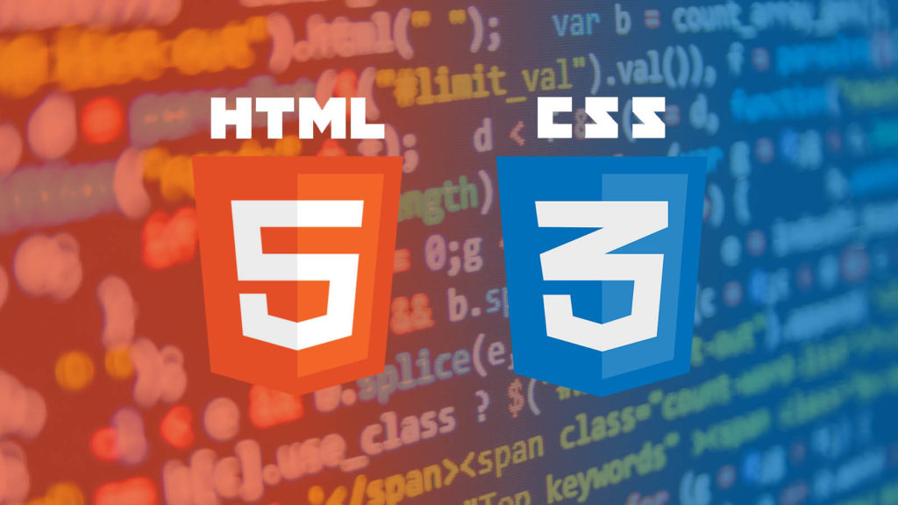

HTML (от англ. HyperText Markup Language — «язык гипертекстовой разметки») — стандартизированный язык разметки документов для просмотра веб-страниц в браузере. Веб-браузеры получают HTML документ от сервера по протоколам HTTP/HTTPS или открывают с локального диска, далее интерпретируют код в интерфейс, который будет отображаться на экране монитора. Элементы HTML являются строительными блоками HTML страниц. С помощью HTML разные конструкции, изображения и другие объекты такие как интеракивная веб-формы могут быть встроены в отображаемую страницу. HTML предоставляет средства для создания заголовков, абзацев, списков, ссылок, цитат и других элементов. Элементы HTML выделяются тегами, записанными с использованием угловых скобок. Такие теги, как img, input,напрямую вводят контент на страницу. Другие теги, такие как p,окружают и оформляют текст внутри себя и могут включать другие теги в качестве подэлементов. Браузеры не отображают HTML-теги, но используют их для интерпретации содержимого страницы. Язык XHTML является более строгим вариантом HTML, он следует синтаксису XML и является приложением языка XML в области разметки гипертекста. В HTML можно встроить программый код на языке программирования JavaScript, для управления поведением и содержанием веб-страниц. Также включение CSS в HTML описывает внешний вид и макет страницы. Официальной спецификации HTML 1.0 не существует. До 1995 года существовало множество неофициальных стандартов HTML. Чтобы стандартная версия отличалась от них, ей сразу присвоили второй номер. Версия 3 была предложена Консорциумом Всемирной паутины (W3C) в марте 1995 года и обеспечивала много новых возможностей, таких как создание таблиц, «обтекание» изображений текстом и отображение сложных математических формул, поддержка gif формата. Даже при том, что этот стандарт был совместим со второй версией, реализация его была сложна для браузеров того времени. Версия 3.1 официально никогда не предлагалась, и следующей версией стандарта HTML стала 3.2, в которой были опущены многие нововведения версии 3.0, но добавлены нестандартные элементы, поддерживаемые браузерами Netscape Navigator и Mosaic.
